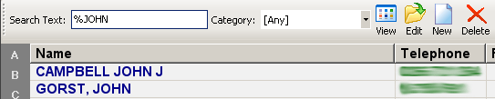
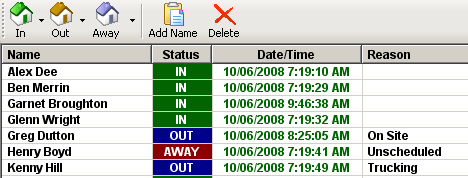

Main Window
The main window is the window you see when the program starts. There are two buttons at the top of the window. One is labeled 'Contacts' and the other 'In/Out Board'.
These buttons switch between the two sections of the program and they are always at the top of the window.
At the top of the window there is a Database menu which allows you to edit the categories and export data. You can also print to entire address book from this menu.
Data can be exported into CSV and XML formats.
Contact Listing
In the centre of the window there is a list. This list displays the first 100 contacts that match the search text and category. Double clicking on any of the items in the list will display a window with the complete details for the selected contact.
Down the left side of the window there is a clickable alphabet selector. Clicking the letters will automatically display the first 100 contacts starting with the selected letter. The Search Text box will be set to the letter.
Across the top of the contacts list there is a menu bar with some buttons (View, Edit, New and Delete). The View button opens a new window and displays all the information for a contact. To the right of the buttons displays the telephone and mobile/cell number for the selected contact in the list.
The Search Text entry box next to the buttons allows you to search for a particular name or part of a name. You can use special characters in this box called wild cards that allow you to search for patterns. The percentage % will match any number of characters and the underscore _ will match any single character.
Example 1: Searching ‘CA’ will find all names starting with CA such as CANFIELD or CAMPBELL.
Example 2: Searching ‘_AT’ will bring up any name with A as the second letter and T as the third letter. Such as BATTREY or NATIONAL.
Example 3: Searching ‘%AT’ will find all names that contain the letter sequence ‘AT’ such as BOBCAT or RADIATOR.
You can use a combination of wild cards for example: ‘% ME__L %KS’ will match ‘ALL METAL WORKS’ and other names like it. This example is just to demonstrate how wild cards work. It is not really a practical search. This feature could be useful for picking out a name out of similar names or finding names if unsure of the spelling.
Next to the Search Text box there is a category drop down box. If you select a category other than the ‘[ANY]’ category the contacts list will only display contacts of that category.
Example Screen Shot

In/Out Board
At the top of this window below the ‘Contacts’ and ‘In/Out Board’ buttons there is a set of buttons for manipulating the in/out board. To add a name to the list, click the ‘Add Name’ button and a popup box to enter the name will be displayed.
To set the status of a name, select the name in the list and click either the ‘In’, ‘Out’ or the ‘Away’ button. When clicking the out or away button, an input box window will appear asking you to specify a reason to be displayed on the screen. You can also click the little arrow beside the out and away buttons to pick a reason from a list. There is a little arrow next to the in button which allows you to set an optional start time. This feature is only optional and is reset everyday automatically.
The ‘Date/Time’ column in this list specifies when the status was last changed. If the date is not within the current day it will be highlighted red.
Example Screen Shot

Viewing, Editing and Adding Contacts
Viewing and Printing
Editing and adding contacts is fairly simple. You can open a contact for viewing either by double clicking the name in the list or by clicking the ‘View’ button on the menu. In this screen you can see all details and print a details report by clicking the ‘Print Contact’ button at the bottom of the window.
Editing
To edit a contact just select the contact in the list and click the ‘Edit’ button.
Adding a New Contact
Click the ‘New’ button on the menu of the contacts list window. You will be presented with a number of fields to fill in. In the postal address section there is a button labeled ‘As Above’. When you click this button all details in the location address section are copied to the postal address section. The notes section on the right of the screen has the option to use different fonts, sizes and colours. You can format your notes to what ever style you require. Remember to set the category.